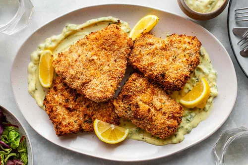

Baked Haddock
Description
This baked handock recipe is quick and easy to prepare with Parmesan bread
crumb coating, plus it's nice alternative to deep frying.

Ingredients
- 3/4 cup milk
- 2 teaspoons salt
- 3/4 cup bread crumbs
- 1/4 cup grated Parmesan cheese
- 1/4 teaspoon ground dried thyme
- 4 haddock fillets
- 1/4 cup butter, melted
Steps
- Preheat oven to 500 degrees
- In small bowl, combine the milk and salt. In separate bowl, mix together the bread crumbs,Parmesan cheese, and thyme.
- Dip haddock fillets in the milk, then press into crumb mixture to coat.
Place haddock fillets a glass baking dish, and drizzle with melted butter.
- Bake on the top of preheat oven until the fish flakes easily, about 15 minutes.